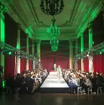

Ma progression
Début d’année
Au début de l’année, certaines compétences comme la prise de parole ou l’utilisation de certains outils étaient difficiles.
Progression
Au fil des projets, j’ai gagné en confiance, notamment dans le travail en groupe et la communication.
Aujourd’hui
Je suis désormais plus à l’aise dans la gestion de projets, les outils numériques et la création de contenu.
Mon avenir
Je souhaite poursuivre en deuxième année de BUT afin de continuer à progresser et me rapprocher de mon objectif professionnel.
Ensuite, en troisième année, j’aimerais soit la réaliser en alternance dans la communication événementielle, soit partir en Erasmus en Espagne afin de découvrir une nouvelle culture et apprendre une nouvelle langue.
Objectifs sur le long terme
Après l’obtention de mon BUT, je souhaite poursuivre mes études en Master (M1 puis M2) dans une école spécialisée dans la communication événementielle.
Je suis particulièrement intéressée par l’organisation d’événements dans les domaines de la mode et du sport, qui sont des secteurs qui me plaisent particulièrement.
Mon projet professionnel
Mon objectif est de devenir cheffe de projet événementiel.



Ce métier consiste à concevoir, organiser et coordonner des événements tels que des défilés, des événements sportifs, des lancements de produits ou encore des séminaires ou des mariages.
Il demande de la créativité, de l’organisation et une grande capacité à travailler en équipe afin de gérer toutes les étapes d’un projet, de sa conception à sa réalisation.
Ce métier me correspond car il regroupe la créativité, la gestion de projet et le travail en équipe dans des environnements actif, avec pleins de nouveaux défis. Ce que j'aime dans ce métier et la nouveauté et la diversité des évènements dans lesquels je pourrais me retrouver.